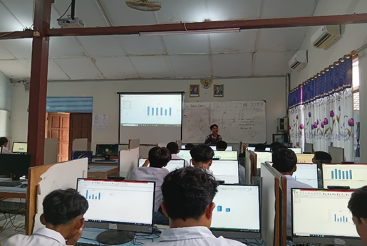
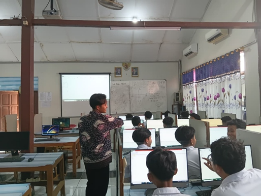
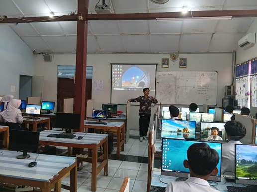

Analisis komprehensif terhadap perangkat pembelajaran berbasis model Problem-Based Learning (PBL) yang berfokus pada melatih peserta didik memilih dan membuat visualisasi data yang tepat – grafik batang, garis, lingkaran, dan pencar – mulai dari tabel angka hingga praktik membuat grafik sendiri menggunakan Excel.
Materi Visualisasi Data: Grafik Batang, Garis, Lingkaran & Pencar (Fase D)
Modul ajar ini dirancang untuk kelas VIII dengan model Problem-Based Learning (PBL) dan alokasi 2 JP (2 x 25 menit). Bertujuan memandu peserta didik memilih jenis grafik yang tepat (batang, garis, lingkaran, pencar) berdasarkan karakteristik data, kemudian mempraktikkan pembuatan tabel dan visualisasinya sendiri menggunakan Microsoft Excel.
Modul ini disusun berdasarkan model Problem-Based Learning (PBL), di mana peserta didik dihadapkan pada masalah otentik – kesulitan membaca data mentah dalam bentuk tabel – sehingga kebutuhan mempelajari visualisasi data muncul secara bermakna dari pengalaman mereka sendiri, bukan diajarkan secara langsung.
Pemilihan aktivitas membuat grafik secara mandiri di Excel selaras dengan teori Dual Coding (Allan Paivio), yang menyatakan bahwa informasi akan lebih mudah dipahami dan diingat ketika disajikan melalui dua jalur representasi sekaligus, yaitu data verbal/numerik (tabel) dan representasi visual (grafik).
Presentasi Visual Jenis-jenis Grafik & Studi Kasus Pemilihan Grafik
Media presentasi ini digunakan untuk memberikan stimulasi visual kepada peserta didik, menampilkan perbandingan data nilai Agus dalam bentuk tabel dan diagram batang, penjelasan empat jenis grafik (Batang, Garis, Lingkaran, Pencar) beserta fungsi dan contohnya, hingga tiga studi kasus nyata (suhu ruangan laboratorium IPA, hasil pemilihan ketua OSIS, dan tinggi badan siswa) agar peserta didik memahami kapan setiap jenis grafik digunakan.
Penyusunan media visual ini didasarkan pada Teori Kognitif Pembelajaran Multimedia (Richard Mayer), khususnya Signaling Principle (Prinsip Sinyal) yang menyoroti unsur-unsur penting seperti judul grafik, label sumbu, dan formula cepat pemilihan grafik agar perhatian peserta didik terarah pada konsep esensial.
Perbandingan data nilai Agus dalam dua representasi (tabel dan diagram batang) pada slide pembuka turut mendukung prinsip Dual Coding, membantu peserta didik membandingkan langsung efektivitas kedua bentuk penyajian data tersebut.
Praktik Membuat Tabel Data dan Visualisasi Grafik di Excel
LKPD terbagi menjadi dua kegiatan: menentukan jenis grafik paling tepat untuk tiga studi kasus (suhu ruangan laboratorium, hasil Pilketos, dan tinggi badan siswa), serta praktik mandiri membuat satu tabel data pilihan sendiri (misalnya nilai ulangan beberapa mata pelajaran atau data hobi teman sekelas) dan mengubahnya menjadi grafik menggunakan fitur Insert Chart pada Excel.
Aktivitas pada LKPD ini sejalan dengan Teori Konstruktivisme (Jean Piaget), yang menekankan bahwa pemahaman tentang visualisasi data akan lebih kuat ketika peserta didik membangun sendiri representasi grafiknya, bukan sekadar mengamati contoh yang sudah jadi.
Kegiatan menentukan jenis grafik pada studi kasus sebelum praktik mandiri turut menerapkan prinsip Scaffolding (Jerome Bruner), di mana pemahaman dibangun secara bertahap mulai dari analisis kasus terbimbing hingga praktik membuat grafik secara mandiri.



Berisi lampiran 7 dan 8 tentang penilaian Guru Pamong.